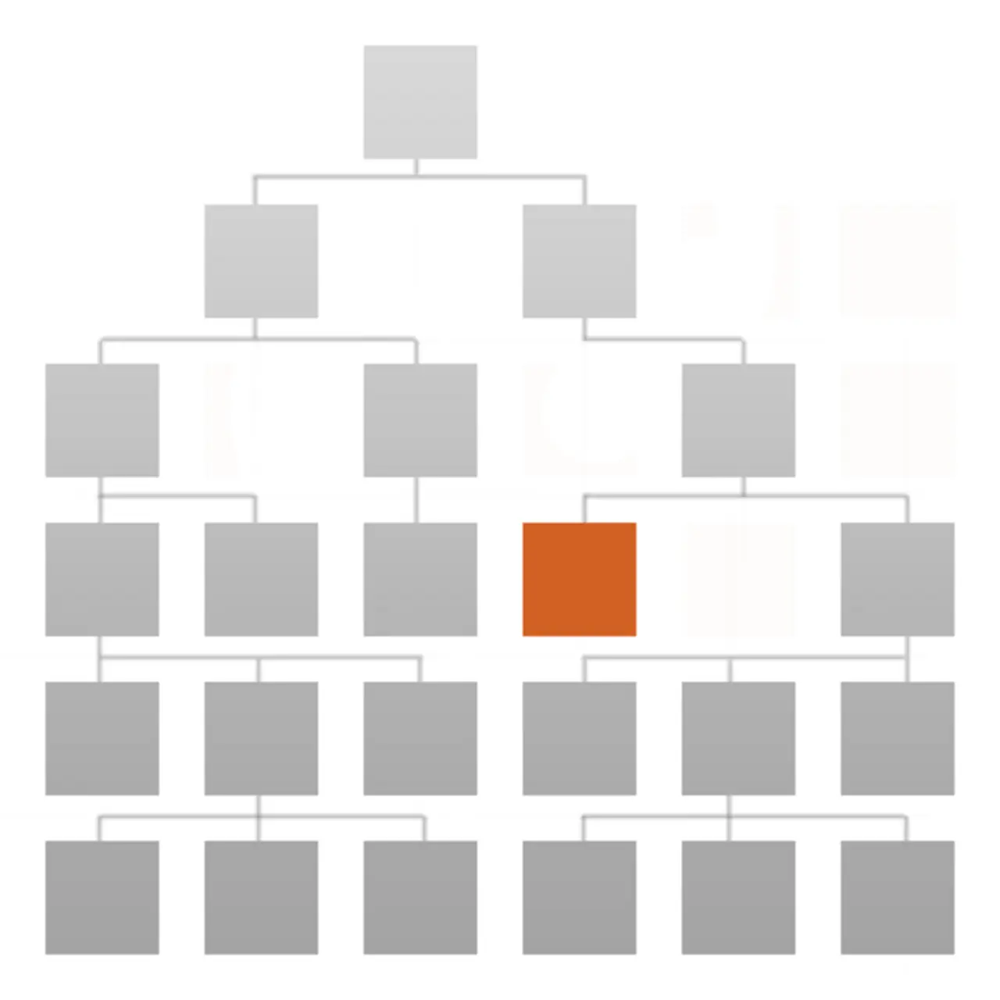

Short answer
Faceted navigation generates many URLs by combining filters on one set of products.
Some combinations match a real shopping path a buyer uses. Most combinations are thin reshuffles of the same grid. Crawlers that follow every filter link can spend their fetching on near-duplicates and see important documents less often. SEO Health limits which combinations are linked and indexable. It does not pretend each combination is a topic.
Definition
A crawl trap here is a space of URLs that grows by multiplication: color times size times material times sort. Internal links should emphasize the combinations you intend, and other combinations should be reachable without being endlessly linked, or not indexable, according to a rule you can explain. The rule is a template decision. It is not a rank.
How a crawl meets this rule
Link and canonicalize only the facet combinations that are real documents, and stop the template from linking every combination.
A canonical pointing every facet URL at the unfiltered category is honest when the facet page adds no text of its own. It is wrong when a facet page has a unique introduction you intend to keep. Do not hide that choice inside a script-only filter that also removes the URL. People can still filter. The crawlable links should match the decision.

What to check
- Footer or grids that link every filter combination
- Combinations with unique copy versus reshuffles
- Canonical targets that match that distinction
- Script-only filters that remove the URL entirely
- One category URL used as the sample
A practical example
A valve catalog links every combination of size, alloy, and sort from the category footer. The indexable set should be the category and a few alloy pages that have real copy. Other combinations can exist as filtered views with a canonical to the category, and the footer should stop emitting all of them as equal links.
What this does not claim
Controlling facets does not guarantee rankings or citations.
Where Mika Visibility files this
Mika Visibility groups crawlability with SEO Health: robots rules, status codes, and paths a crawler can follow. Broken paths and blocked templates are health findings. Missing topics are not. GEO still depends on pages a crawler can actually reach, but reachability does not write the answer for the buyer.
The illustration shows filters on one set so multiplication is visible without a crawl statistic.
FAQ
How do facets multiply URLs?
Faceted navigation generates many URLs by combining filters on one set of products.
Which combinations should be linked?
Link and canonicalize only the facet combinations that are real documents, and stop the template from linking every combination.
Does facet control guarantee rankings?
Controlling facets does not guarantee rankings or citations.
Next step
Run a structured SEO + GEO audit to see health findings, growth gaps, and a blueprint you can act on.
Clearer entities, answers, evidence, and context make pages easier to understand and reference. Results in any answer product are not guaranteed.